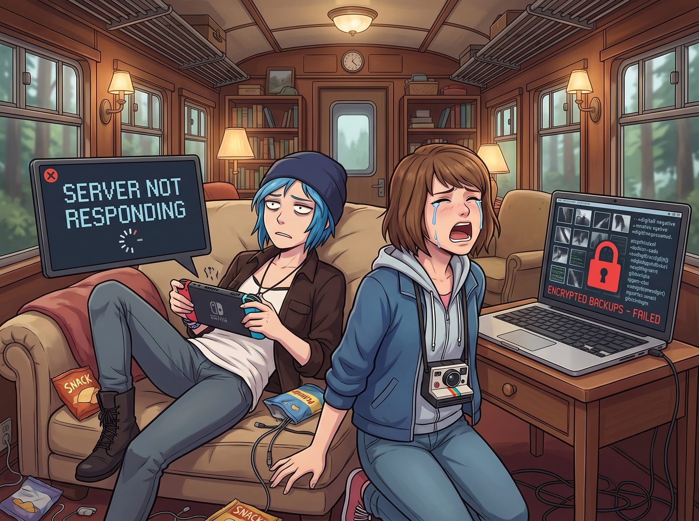

勞動改造協議

在二號車廂裡，被切斷精神糧食的痛苦是難以想像的。
僅僅過了不到四十八小時，這兩個大頭蝦就已經處於崩潰的邊緣。Chloe 像具失去靈魂的喪屍一樣，癱在沙發上瘋狂地按著遊戲機上那個永遠顯示伺服器無回應的連線按鈕；而 Max 則對著筆記型電腦螢幕上一堆被加密成亂碼的數位底片備份，發出絕望的哀嚎。
一、卑微的求饒
「Lily，實習生，好妹妹……」Chloe 終於放下了那僅剩的一絲街頭霸王尊嚴，從沙發上滑下來，幾乎是跪在 Lily 的工作台旁邊。她雙手合十，語氣卑微得連 Victoria 看了都忍不住搖頭：「我發誓，我再也不動妳的螢光筆了。我甚至願意接下來一個月幫妳手洗那件粉色小熊睡衣！求妳把我的IP解鎖吧，今晚公會要打跨服公會戰，我如果缺席會被踢出去的！」
Max 也湊了過來，眼巴巴地看著 Lily：「Lily，那裡面有我剛拍的舊金山海鷗逼停無人車的照片……如果它永遠變成亂碼，我的攝影生涯就結束了。」
實習生 Lily 端坐在電競椅上，安靜地喝了一口熱牛奶。她看著這兩個已經被數位斷糧折磨得失去理智的學姐，推了推反光的圓框眼鏡。
其實，以 Lily 的運算邏輯，她早就預判了這兩人撐不過三天。她之所以下這麼重的手，完全是為了接下來的這個局。
二、將功贖罪的合約
「兩位學姐，二號車廂的法治精神在於罰當其罪。」Lily 軟糯的聲音依然不疾不徐，「不過，根據車廂內部懲戒與勞動改造指導意見第三章第七條，對車廂具有重大貢獻的特殊任務執行，可按比例折抵行政處罰期限。」
Chloe 的眼睛瞬間亮了：「妳是說，我們可以接任務將功贖罪？」
「是的。」Lily 點開平板電腦，將一份標有紅色機密字樣的任務簡報投影到大螢幕上。這絕不是一個隨便敷衍的放水任務，而是一份難度極高、且完全符合兩人技能樹的硬核委託。
「專案代號：午夜合規審計。」
Lily 拿起一根雷射筆，指著螢幕上的一張衛星地圖：「昨天晚上，我的環境監測腳本發現，距離我們車廂十五公里外的奧林匹亞國家森林邊緣，有一家名為 Apex 物流的無人機快遞新創公司，非法建立了一個訊號中繼站。他們不僅侵佔了受保護的林地，更嚴重的是，他們為了給無人機機隊充電，正在非法竊取縣級電網的電力。這導致我們車廂核反應爐的外部電壓出現了百分之零點三的微小波動。」
「這群矽谷的寄生蟲，居然敢偷我們的電？！」Chloe 頓時義憤填膺，彷彿核反應爐是她親生的一樣。
三、明確的任務分工
「問題在於，」Lily 溫柔地繼續說道，「他們的伺服器是物理隔離的，而且所有的財務報表都透過加密貨幣洗白了。我無法在線上直接將他們處決。我需要物理級別的滲透與不可篡改的實體證據。這就是妳們的任務。」
Lily 轉過身，目光在 Chloe 和 Max 身上來回掃視，給出了極其明確的分工：
「硬體駭入與物理破壞，Chloe 學姐。他們的配電箱使用的是軍用級實體鎖。妳需要發揮妳的街頭手藝，撬開它，並將這個USB嗅探器直接插進他們的主機板接口。只要維持三分鐘，我就能遠端接管他們的無人機機隊。」
「類比取證，Max 學姐。在法庭或環保署的聽證會上，數位照片容易被對方律師以AI生成或篡改為由駁回。但我查過判例，寶麗來底片因為其不可逆的物理顯影特性，擁有最高級別的證據效力。妳必須在黑暗中，拍下一張他們非法接線與柴油發電機同框的完美照片。過曝或失焦，任務就算失敗。」
這不是放水。這是一次將街頭開鎖、潛行與底片攝影完美結合的戰術行動。
「聽起來就像我們以前偷偷溜進阿卡迪亞灣校長辦公室的升級版。」Max 摸了摸胸前的相機，雖然有些緊張，但那種久違的冒險血液已經開始沸騰了。
「等等，」Chloe 敏銳地察覺到了一絲不對勁，「既然是搞非法勾當的新創公司，他們的安保不可能只有實體鎖吧？」
「您的直覺非常敏銳，Price 學姐。」Lily 露出了一個純潔無暇的微笑：「為了節省人力成本，Apex 物流沒有僱用保安。他們在營地裡部署了兩台改裝過的四足機器狗。它們配備了熱成像儀和高分貝警報器。如果被發現，妳們會被幾十架送貨無人機像馬蜂一樣追殺出森林。」
車廂裡安靜了兩秒。
「所以，妳是要我們去跟終結者機器狗玩躲貓貓，還要拍出一張完美的底片？」Chloe 嚥了一口口水。
「這是一份公平的交易合約。」Lily 將一份電子免責聲明推到兩人面前，「成功，妳們的遊戲和底片立刻解鎖，並且我會用敲詐來的和解金給 Chloe 學姐買一套全新的皮卡避震器。失敗，或者妳們被機器狗咬了……那就只能等一個月後再打遊戲了。簽嗎？」
Chloe 看了看 Max。Max 咬了咬嘴唇，然後重重地點了點頭。
「成交，妳這個吸血鬼。」Chloe 毫不猶豫地在平板上按下了指紋，「準備好妳的解鎖密碼吧，老娘以前連火車都能躲過去，還怕兩隻只會算演算法的鐵皮狗？」
四、聖光的祝福
Victoria 坐在沙發上，看著這兩個興奮地開始往臉上塗抹迷彩油彩、檢查手電筒和底片的傢伙，無奈地嘆了口氣。「Lily，妳根本就是把她們當成了免費的特種部隊。而這兩個白痴居然還因為能幫妳幹髒活而感到興奮。」
「這叫管理學中的激勵機制，Victoria 學姐。」Lily 乖巧地整理著桌上的文件，「給碳基生物一個他們自以為能掌控的挑戰，他們就會忘記自己其實是在替演算法打工。」
這時，Kate 提著一個保溫袋走了過來。「Chloe，Max，晚上的森林很冷，我給妳們準備了熱可可和三明治。」小天使溫柔地幫 Max 理了理衣領，雙手合十祈禱，「請一定不要傷害那些機器狗哦，它們也只是在努力工作而已。如果可以的話，繞過它們就好了，願平安與妳們同在。」
帶著大天使的祝福、行政黑魔法師的合約，以及對拿回遊戲帳號的極度渴望，Chloe 和 Max 披上夜行衣，一頭紮進了奧林匹亞半島漆黑的森林裡。這場名為勞動改造的賽博廢土大冒險，正式拉開了序幕。